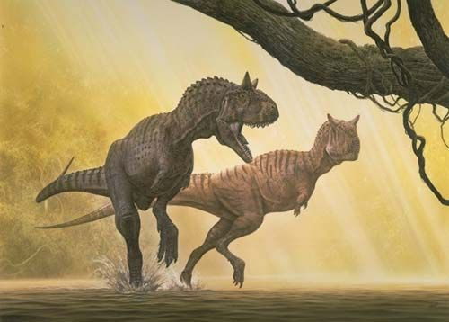

Carnotaurus (do latim "touro carnívoro", em português Carnotauro) é um gênero de dinossauro carnívoro e bípede que viveu durante o período Cretáceo, principalmente na região onde hoje se situa a América do Sul. Sua espécie-tipo é denominada Carnotaurus sastrei. Conhecido a partir de um único esqueleto bem preservado, é um dos terópodes mais bem compreendidos do Hemisfério Sul. Seu esqueleto, encontrado em 1984, foi descoberto na província de Chubut, na Argentina, a partir de rochas da Formação La Colônia. O Carnotauro é um membro derivado dos Abelisauridae, um grupo de grandes terópodes que ocuparam o grande nicho predatório nas massas de terra do sul de Gondwana durante o final do Cretáceo. Dentro dos Abelisauridae, o gênero é frequentemente considerado um membro do Brachyrostra, um clado de formas de focinho curto restrito à América do Sul.
